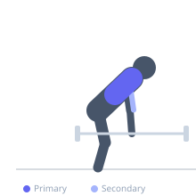

Exercise guide / Meadows Row with Thick Bar Grip
Meadows Row with Thick Bar Grip
The thick-bar Meadows row wraps a fat grip attachment or towel around the barbell end to increase the grip diameter, amplifying forearm and grip strength demands alongside the standard Meadows row benefits. The larger diameter requires greater finger flexor engagement and reduces grip endurance, making it an effective combined lat and forearm training variation.
Primary muscles
latissimus dorsi
rhomboid major
Secondary muscles
biceps brachii
trapezius middle
Stabilizers
erector spinae
Equipment
No Equipment (Bodyweight)
Optional
Hyperextension Bench (45°)


Starting position
- Wrap a fat grip or towel around the barbell end secured in a landmine unit. Stagger the feet with the working-side foot forward. Hinge at the hips and grasp the thick bar end.
Setup
- Fat grip adapters (marketed under various brand names) can be slid onto bar sleeves. A folded gym towel is a free alternative that also increases challenge. Load the bar appropriately — the grip will fatigue before the back does.
Steps
- Step 1: Establish the staggered hinge position and grip the thick bar firmly.
- Step 2: Depress the shoulder blade of the working side.
- Step 3: Row the bar end to the hip, driving elbow up and out.
- Step 4: Hold for 1 second at the top.
- Step 5: Lower under control, fully extending the arm and allowing the lat to stretch.
Coaching cues
- Squeeze the bar like you're crushing it
- Lead with the elbow, not the hand
- Full stretch at the bottom of every rep
Breathing
- Exhale on the row. Inhale lowering.
Range of motion
- Full arm extension to elbow above torso.
Tempo
- 1-1-2-0
Common mistakes
- Dropping the grip before the back fatigues — increase grip work separately to extend sets
- Pulling toward the chest rather than the hip
Safety
- Ensure the fat grip is fully seated on the bar and cannot slip
- Maintain neutral wrist alignment — do not flex or extend excessively with the thick grip
Training
- strength: 6–10 reps
- grip: 10–15 reps
- strength: 3–4 sets
- Rest: {'strength': 120}